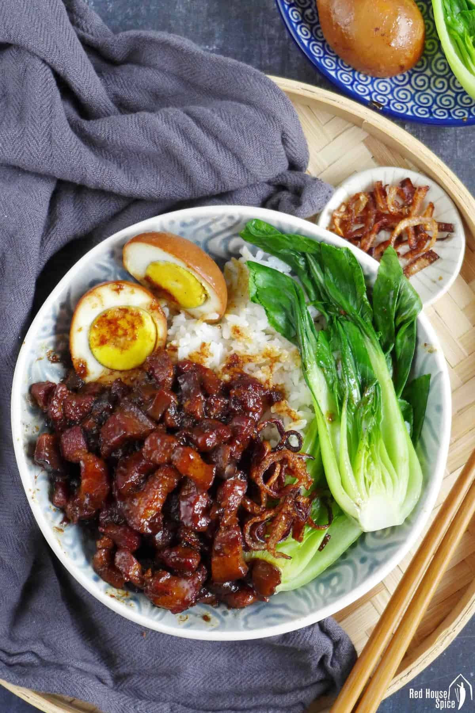

Lu Rou Fan

Description
Cooked in a rich broth to a melt-in-your-mouth texture, Taiwanese Lu Rou Fan is a heavenly scrumptious way to enjoy pork in an all-in-one rice bowl dish.
Ingredients
- Pork belly with skin on, cut into strips
- Shallots (or red onion), thinly sliced, plus oil for frying
- Shiitake mushrooms, rehydrated and diced
Eggs
- Garlic, minced
- Rock sugar (or regular sugar)
- Light & dark soy sauce
- Shaoxing rice wine (skip for an alcohol-free version)
- Chinese five-spice powder & white pepper
- Rice
- Green vegetable
Steps
- 1. Fry sliced shallots in oil until crispy (skip this step if using shop-bought version). Cook hard-boiled eggs over another burner at the same time.
- 2.Fry pork belly strips (without oil) until slightly golden then add aromatics, seasonings, fried shallots, shiitake mushroom, eggs and water. Leave to simmer until tender.
- 3. While waiting, cook rice and blanch green vegetable of your choice. Assemble the bowl once the pork is done.